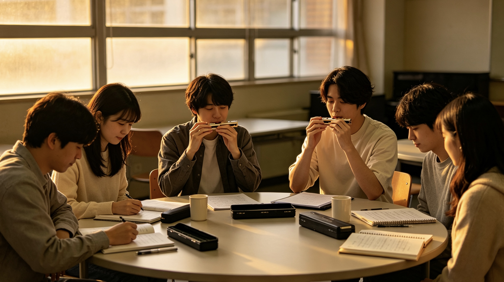

把日常，吹成一首歌
一把口琴，一群朋友
晚风口琴社是面向校园口琴爱好者的交流社团。我们希望把音乐带进普通的学习生活：课后的一段旋律、排练室里的一次配合、校园舞台上的一场演出，都可以成为大学记忆的一部分。口琴体积小，适合随身携带，也适合从简单旋律开始认识音乐。加入这里不需要先证明自己有多优秀，只需要愿意倾听、愿意练习，愿意与伙伴一起把一个音吹得更加清楚。我们欢迎第一次接触口琴的同学，也欢迎已经能够独奏、希望尝试合奏的朋友。
从认识乐器开始
口琴有不同的种类，常见的包括复音口琴、十孔口琴与半音阶口琴。它们在结构、音色和演奏方式上各有特点，适合的曲目与学习路线也有所不同。社团入门交流会先介绍这些区别，再根据大家已有的乐器和兴趣进行分组。我们不会要求所有人立刻购买同一种口琴，也不会用价格判断一件乐器的价值。如果还没有口琴，可以先参加介绍活动，了解基础知识后再决定自己的学习方向。
循序渐进的练习
新成员的练习从姿势、呼吸和节奏开始。我们会一起观察持琴方式，练习平稳呼气与吸气，再尝试把短小的旋律分成几个乐句。遇到声音不稳定时，先放慢速度，找到容易出错的位置，而不是一遍遍从头吹到尾。每次交流都保留提问时间，让大家能够说明自己的困难。练习计划强调持续和适量，忙碌的一周也可以安排几次短练习，让音乐自然融入学习节奏。
在合奏中学会倾听
独奏让人认识自己的声音，合奏则让人学会关注别人。排练时，我们会先确定速度和进入位置，再分别练习旋律与伴奏，最后把各声部组合起来。即使只承担几个简单的长音，也能成为完整音乐中重要的一部分。遇到不同意见时，大家可以分别演示自己的理解，通过倾听与讨论找到更合适的表达。我们重视每一位成员的参与，不把舞台上的主旋律当作唯一值得关注的角色。
不止于演奏
社团也需要喜欢摄影、文字、海报设计和活动组织的同学。有人擅长记录排练瞬间，有人愿意整理曲谱，有人能把一次活动的过程写成温暖的故事。这些工作同样能够帮助大家认识音乐、认识彼此。成员可以在演奏之外尝试不同的岗位，并根据课程安排选择参与程度。我们希望这里既有认真练习的时刻，也有轻松交流的空间，让不同性格与不同特长的人都能找到适合自己的位置。
共同维护舒服的环境
良好的社团氛围需要大家一起维护。参加活动时，请尊重他人的演奏，不因失误而起哄，也不要在别人讲解时持续吹奏。口琴属于直接接触口部的个人乐器，应注意个人卫生和正确保养，不随意混用。排练结束后，大家共同整理桌椅，清点物品，保持场地整洁。未经同意，不发布他人的近距离照片或个人联系方式。对时间、环境与伙伴的尊重，是我们能够长期一起玩音乐的基础。
把第一步留给今天
很多人想学一件乐器，却一直等待一个足够空闲、足够自信的开始。我们愿意把这个开始变得简单：先听一首曲子，认识一位伙伴，再尝试吹出自己的第一个乐句。不要求每个人都走向专业舞台，也不要求每次练习都立刻出现进步。只要能在日常中慢慢听见自己的变化，就已经值得继续。欢迎走进口琴社，把好奇心带来，把属于你的旋律留在校园里。
把相遇，写进这个学期
| 晚风口琴社 2026 年春季学期活动安排表 | |||
|---|---|---|---|
| 活动时间 | 活动名称 | 活动地点 | 主要内容 |
| 第 2 周 周三 18:30 | 新成员见面会 | 大学生活动中心 201 教室 | 认识伙伴、介绍社团、曲目交流 |
| 第 3 周 周三 18:30 | 口琴基础教学公开课 | 持琴姿势、呼吸练习、入门旋律 | |
| 第 4—8 周 周三 18:30 | 每周小组练习 | 大学生活动中心 202 教室 | 分组带练与节奏训练 |
| 第 10 周 周六 15:00 | 校园音乐分享 | 校园音乐角 | 独奏交流与曲目欣赏 |
| 第 12 周 周三 18:30 | 合奏工作坊 | 大学生活动中心 202 教室 | 声部配合与节目排练 |
| 第 15 周 周六 15:00 | 学期成果展示 | 大学生活动中心小礼堂 | 作品展示与学期回顾 |
以上时间与场地为课程作业中的示例安排，非真实活动通知。
学期活动的思路
本学期的活动围绕认识伙伴、学习基础、参与合奏与分享成果展开。活动安排表提供每个阶段的示例时间和地点，方便大家理解学习过程。前期以体验和交流为主，中期逐步加入小组排练，后期组织展示与复盘。对于刚刚接触口琴的成员，重要的不是赶上别人的进度，而是形成适合自己的练习习惯。对于已有基础的成员，我们鼓励大家承担带练与示范任务，在帮助伙伴的过程中重新梳理自己的演奏方法。
新成员见面会
见面会从轻松的自我介绍开始，每个人可以分享一首喜欢的歌曲，或者说说为什么想了解口琴。组织成员会介绍活动方式、场地使用规则和日常联系流程，再安排短小的现场演奏，让新同学听到不同口琴的声音。尚未购买乐器的同学也可以参与讨论，不必因为没有装备而错过第一次见面。活动最后会收集大家希望学习的曲目和方便参加的时间，为后续分组提供参考。
基础教学公开课
基础公开课与见面会安排在同一间教室，方便新成员熟悉场地。课程将依次介绍持琴、呼吸、节拍与简单乐句，并通过慢速示范帮助大家观察细节。带练成员会提醒大家保持自然放松，不必用很大的力度追求音量。练习过程中可以随时举手提问，也可以在示范结束后单独交流。公开课的目标是让每个人明白如何开始练习，而不是在一次活动中掌握所有技巧。
每周小组练习
小组练习按照学习需求安排内容，既保留基础组，也设置适合已有经验成员的合奏交流。每次开始前先确定一个具体目标，例如吹清楚一个乐句、保持稳定节拍或听清声部衔接。练习结束时再回顾目标是否完成，并记录下一次需要继续解决的问题。不能到场的同学可以提前说明情况，参考本组练习记录自行补练。我们希望活动保持连续，也希望成员能够合理安排课程与休息。
校园音乐分享
音乐分享活动面向愿意表达的成员，内容可以是一段独奏、一首合奏，也可以是对某首曲子的简短介绍。报名展示时不必追求复杂曲目，能够完整表达自己熟悉的旋律同样值得欣赏。组织者会提前核对节目顺序、设备与场地条件，并安排适当的准备时间。观众可以在演奏结束后提出友善的建议，让舞台成为交流的一部分，而不是一次让人紧张的排名。
合奏工作坊
合奏工作坊重点练习进入、停顿、力度和结尾这些容易被忽视的细节。大家先用拍手或轻声数拍确认节奏，再拿起口琴进行分段练习。出现不同步时，先判断问题来自速度、呼吸还是对曲谱的理解，然后有针对性地调整。经验较丰富的成员可以帮助整理声部，但应给新成员足够的表达机会。最终的效果来自共同配合，每一个简单声部都值得认真对待。
学期展示与回顾
学期末的展示记录大家的学习过程，也为下一阶段的活动积累经验。我们会邀请成员分享最有收获的一次练习、曾经遇到的困难和希望继续尝试的曲目。活动后整理照片、节目与文字记录时，将先征求相关成员的同意。场地、时间或课程安排发生变化时，应及时更新通知，避免成员白跑一趟。表中的具体安排用于本次网页作业展示，真实开展活动前需要完成场地确认和正式通知。
让每个瞬间，都有回声

五秒钟的音乐时光
排练室里的日常
风采展示关注的不只是正式登台的一刻，也包括排练室里最普通的细节。窗边翻开的曲谱、桌面整齐摆放的琴盒、伙伴之间互相提醒节拍的动作，都能记录学习的真实过程。我们希望照片传达自然的交流氛围，让第一次了解社团的人看见大家如何一起练习。拍摄时不打断讲解，不要求成员为了镜头反复摆出夸张动作，也不以是否出现在画面中心衡量一个人的参与价值。
从独奏到合奏
一个人练习时，最容易注意自己的音准和旋律；站在伙伴身边时，还需要听见彼此的速度和呼吸。展示内容会记录这种变化：有人开始时只敢演奏几个音，后来能够完整吹奏一段旋律；有人原本习惯独奏，后来学会主动降低音量，为别人的声部留出空间。我们更愿意分享这些具体的成长，而不是只展示完成度最高的一遍，让新成员知道进步来自许多平常的练习。
镜头背后的伙伴
每一次活动记录都离不开幕后成员。摄影同学需要观察光线与角度，文字同学需要核对活动内容，组织同学则负责让流程顺畅进行。大家可以轮流体验这些工作，理解一场活动从准备到结束需要哪些配合。整理照片时，我们会保留能够说明过程的画面，并避免过度修饰人物外貌。发布之前应确认照片用途，尊重不希望公开露脸的成员，让记录始终建立在相互理解的基础上。
图片中的音乐现场
本页预留的活动图片用于表现大学校园口琴社的日常练习场景。理想的画面中，男生女生围坐在明亮的活动室，手持口琴交流旋律，桌面放着曲谱和琴盒，人物动作自然。点击图片区域可以进入活动介绍页，了解一次体验活动的主要内容与参加方式。图片是帮助读者理解场景的入口，配套文字则说明画面所对应的活动，让网页浏览既有视觉感受，也有清楚的信息。
短视频记录节奏
短视频适合记录一个简短而完整的瞬间，例如排练开始前的准备、演奏时的自然动作或结束后的微笑。为了让文件便于保存与加载，本次作业的视频控制在五秒以内，采用横向画幅。由静态图片制作视频时，可以使用轻微的推近或平移，避免过强的晃动与不必要的转场。画面的重点始终是人物与口琴，不让夸张的特效遮盖乐器或改变人物形态。
欣赏也需要方法
观看展示时，可以尝试关注演奏者之间的交流，而不只判断某个音是否完美。一起进入乐句前的眼神、出现停顿时的等待、结束后对伙伴的回应，都是合奏的重要部分。对新成员而言，这些细节能够帮助理解为什么练习不只是重复吹奏。如果你对画面中的活动感兴趣，可以返回活动安排查看相关项目，再通过报名表说明希望参与的方向，让欣赏逐渐变成自己的亲身体验。
留下可以回看的记忆
学期结束后，整理好的图片与短视频可以帮助成员回想自己的变化，也方便下一届同学了解社团活动。每份记录应配上准确的活动说明，避免将示意图片误当成已经发生的真实事件。本页文字和活动情境为课程作业设计，后续替换为实际素材时，应相应更新介绍。我们期待未来留下的每一段影像都能讲清一个小故事，让音乐不只存在于演奏的几分钟，也留在能够再次翻看的校园记忆里。
第一声，也许有点紧张
第一次推开门
林然第一次来到口琴社时，把新买的口琴一直放在书包里。活动室里已经有人开始练习，他担心自己连一个完整的音都吹不好，会让其他人觉得麻烦。坐在门边的学姐先向他打了招呼，递来一张简单的练习说明，告诉他今天只需要试着找到舒服的呼吸方式。没有人催促他展示，也没有人追问学过多久。听着房间里断断续续的旋律，他终于拿出口琴，决定先试一次。
一个不够清楚的音
第一次练习并不顺利，林然总觉得自己吹出的声音有些混杂。越想吹得响亮，身体反而越紧张。带练的同学让他先停下来，放松肩膀，再把速度降下来，观察嘴的位置和呼吸变化。他发现原来大家并不是轻轻松松就能掌握技巧，每个人都曾经在类似的问题上反复尝试。那天离开时，他还不能演奏完整曲子，却知道了回去之后应该练什么，这让他比想象中更加踏实。
忙碌中的小计划
接下来的一周，课程和作业把时间切得很碎。林然原本想等周末一次练很久，后来决定每天只安排一小段时间，先复习几个稳定的音，再练两句旋律。他把容易出错的位置记在纸上，下次活动时带去询问。并不是每天都能明显进步，有时还会退回之前的状态。但练习记录让他看见自己已经解决过哪些问题，也提醒他不必用一次表现判断全部努力。
第一次加入小组
第二次小组活动中，林然被分到一个简单的合奏声部。他起初觉得自己的部分太短，担心无法为大家提供帮助。负责旋律的同学却告诉他，稳定的进入和结束会让整个乐句更完整。排练时，他第一次试着在吹奏之前先听别人的声音，判断什么时候该加入。虽然中途还是错过了一拍，伙伴们只是停下来重新数拍，再一起开始。那次练习让他发现，合奏中的信任往往就藏在一次耐心的重来里。
舞台之前的犹豫
音乐分享活动临近时，林然一度想退出。他担心站在大家面前会忘记旋律，也担心自己的失误影响整组。伙伴们没有简单地说不要紧张，而是和他一起走了一遍流程：什么时候准备，什么时候看指挥，出错后如何等待下一个乐句重新加入。把模糊的担心变成具体的准备之后，他慢慢有了把握。正式演奏时仍然有一点紧张，但他听见身边熟悉的声音，就想起了许多次共同练习的下午。
从被帮助到帮助别人
后来，又有一位新同学在门口犹豫着不敢进来。林然想起第一次参加活动的自己，主动让出身边的位置，把当天的练习内容讲给对方听。他还不能回答所有问题，但可以分享自己曾经卡住的地方，也知道什么时候应该请更有经验的成员示范。看见对方终于吹出较清楚的声音，他忽然理解了学姐最初的耐心。社团带给他的变化不仅是能够演奏，也包括愿意主动向别人伸出一点帮助。
故事还在继续
学期末回看活动记录时，林然最喜欢的照片并不是站在舞台上的那张，而是一张大家围着曲谱讨论的日常画面。照片里有人认真数拍，有人低头做标记，还有人刚刚放下口琴准备说话。他觉得那才是自己记住的社团：允许不熟练，也鼓励继续尝试。这个故事是为招新网页创作的虚构情境，并非真实成员采访。我们希望它传达一种邀请：如果你也有一点好奇，可以先走进来，属于你的第一段旋律也许就在下一次练习中。
下一段旋律，等你加入
先认识自己的期待
填写报名表之前，可以先想一想你希望从社团获得什么。有人想学会一首喜欢的曲子，有人希望找到一起练习的伙伴，也有人想尝试活动摄影与舞台组织。不同目标都可以成为加入的理由，不需要把自己的介绍写得很华丽。请尽量用清楚、真实的文字说明兴趣与时间安排，方便后续交流。对口琴了解不多也没有关系，报名只是认识彼此的开始，学习方向可以在体验之后继续调整。
基本信息如何填写
姓名用于日常称呼和活动登记，请填写你希望组织成员核对的真实信息。性别通过单选项选择，出生日期按照年、月、日分别填写。年月日输入框采用文本形式，请使用数字并注意日期是否有效。手机与邮箱也采用文本输入框，请在填写后检查是否遗漏数字或写错字符。准确的信息有助于活动联系，但本作业页面没有接入服务器，不会把这些内容发送给真实社团，请勿把课堂演示误认为正式报名渠道。
关于已有基础
是否具备口琴基础并不是录取考试，也不会决定你是否值得参加活动。选择没有基础，可以帮助组织者安排更详细的入门说明；选择已有基础，则可以在自我介绍里补充使用的口琴种类、练习时间和喜欢的曲目。即使已经学习过一段时间，也可以参加基础交流，重新梳理习惯。大家的起点不同，适合的练习路线也不同，准确描述现状比刻意表现得熟练更有帮助。
兴趣可以不止一种
兴趣方向采用多选方式，你可以同时选择基础学习、独奏、合奏、舞台演出以及摄影与宣传。暂时不确定时，可以先选最想尝试的一项，再在介绍中说明希望了解其他内容。社团活动需要不同角色共同完成，参与宣传或组织并不意味着不能学习演奏。我们鼓励成员根据时间与能力逐步尝试，先把一件事情做清楚，再考虑承担更多任务，让兴趣成为持续参与的动力。
年级与个人介绍
年级下拉框包含大一、大二、大三、大四和研究生，请选择当前所在阶段。不同年级的课程安排可能不同，活动协调时需要考虑大家的实际情况。自我介绍可以写一首喜欢的歌、一次接触音乐的经历，或者希望克服的一个小困难。不需要夸大自己的能力，也不必为了凑字数重复空泛的话。几句具体的说明就能让伙伴更容易认识你，例如希望从零开始学习，或者愿意协助记录排练照片。
关于活动安排
是否服从活动安排通过单选项填写。这里的配合意味着愿意了解通知、提前沟通和尊重共同约定，并不要求成员牺牲正常课程或忽视个人情况。如果存在时间冲突，可以选择需要协商，并在个人介绍中说明。真实开展活动时，应在双方明确安排后再确认参加。社团希望建立可靠的协作关系，也尊重合理的请假与退出，让每个人能够在清楚了解要求的情况下作出决定。
提交之前再看一遍
完成表单后，请检查姓名、日期、手机、邮箱与所选项目，再点击提交报名。网页会检查必填内容、日期和联系方式的基本格式；通过检查后只在本地显示演示反馈，不保存报名数据，也不代表已经加入真实组织。需要重新填写时，可以使用重置按钮清空输入与反馈。正式使用前必须另行配置可靠的报名接收方式，并向填写者说明数据用途。感谢你愿意花时间了解口琴社，希望这份对音乐的好奇能够成为校园生活中轻松而长久的一部分。